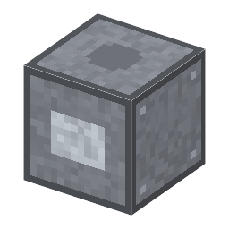

説明
①子ども ウェハーを回る台に押し当てて、鏡のようにみがく機械。作った回路を全部けずって、最初からやり直せる。
②学生 電気 1kW。加工中のウェハー1〜8枚＋砥粒1（アルミナかベンガラ）＋コロイダルシリカ1（空のガラス瓶は上に戻る）→ 層を全部けずったウェハー（60秒）。やり直しは1枚につき2回まで（再生ウェハー）。
③大人 まず固い砥粒でけずって平らにし（ラッピング）、傷の層を取ってから、コロイダルシリカでみがく。シリカの粒は柔らかく、アルカリの液がシリコンの表面を少しだけ溶かすので、化学と機械の両方で傷のない鏡の面になる。
④ガチ 1963年、モンサントのウォルシュとハーゾグがコロイダルシリカでシリコンを鏡面にみがく方法を特許に出した（US 3,170,273）。これが、何層も重ねる今のチップを平らにする CMP [9-31] の祖先。
作り方
使い道
（このアイテムを使うレシピは無い）